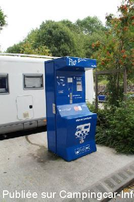
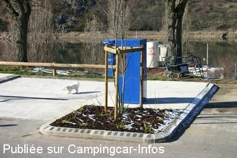
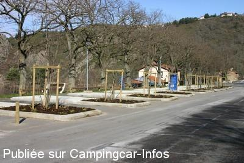
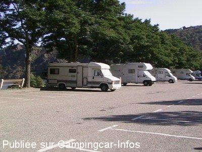

ASN = Aire de services avec stationnement nuit possible de :
SAINT ETIENNE Lac de Grangent
(N° 763)
Accès/adresse :
Saint Victor sur Loire
Base Nautique du lac de Grangent
42230 SAINT ETIENNE
Base Nautique du lac de Grangent
42230 SAINT ETIENNE
Latitude : (Nord) 45.44814° Décimaux ou 45° 26′ 53′′
Longitude : (Est) 4.25631° Décimaux ou 4° 15′ 22′′
Tarif : 2015
Stationnement, services : gratuits
Électricité : 1 jeton /4 h
Jetons : 2,70 €
Disponibles à la mairie ou au kiosque de la plage
Type de borne : FLOT-BLEU
Services :


Douche
Autres informations :
10 emplacements
Tel mairie : +33(0)477 904 428
http://saint-etiennetourisme.com/fr

Le 25/08/2013 par inazuma12

Le 01/02/2010 par JM

Le 01/02/2010 par JM

Le 29/08/2005 par picarddroz
de
Jean Pierre et Dominique
le 04/11/2015 :
Prés belle aire, tranquille, nous sommes passés vers le 5 octobre 2015, une merveille, et de plus gratuit... j'aurais accepté de payer, au moins pour les aides de la commune.
Nous nous promenons, avec des CC qui coute la peau des fesses, la moindre des choses c'est de faire un geste pour les communes.
Prés belle aire, tranquille, nous sommes passés vers le 5 octobre 2015, une merveille, et de plus gratuit... j'aurais accepté de payer, au moins pour les aides de la commune.
Nous nous promenons, avec des CC qui coute la peau des fesses, la moindre des choses c'est de faire un geste pour les communes.
de
hymer584
le 15/08/2014 :
Aire tranquille, avec une belle vue sur le lac de Grangent. Cependant, aucun commerce à proximité, il convient donc de prendre ses précautions dans le cas où on envisage de rester quelques jours. Il n'y a que 9 places prévues pour les camping-cars, la dixième étant en fait le chemin pour accéder au bord de l'eau et aux jeux d'enfants. En revanche en soirée, lorsque toutes les voitures venues pour la journée sont parties, il est possible de stationner sur le grand parking qui fait suite aux emplacements pour camping-cars.
Aire tranquille, avec une belle vue sur le lac de Grangent. Cependant, aucun commerce à proximité, il convient donc de prendre ses précautions dans le cas où on envisage de rester quelques jours. Il n'y a que 9 places prévues pour les camping-cars, la dixième étant en fait le chemin pour accéder au bord de l'eau et aux jeux d'enfants. En revanche en soirée, lorsque toutes les voitures venues pour la journée sont parties, il est possible de stationner sur le grand parking qui fait suite aux emplacements pour camping-cars.
de
Inazuma12
le 10/08/2013 :
Visitée le 6 août 2013. Aire à recommander. Borne Flot Bleu gratuite pour eau (vidange WC et approvisionnement eau propre) et plusieurs bornes payantes (jetons) pour l'électricité. Une dizaine d'emplacements pour CC et vaste parking en plus. Très beau paysage.
Visitée le 6 août 2013. Aire à recommander. Borne Flot Bleu gratuite pour eau (vidange WC et approvisionnement eau propre) et plusieurs bornes payantes (jetons) pour l'électricité. Une dizaine d'emplacements pour CC et vaste parking en plus. Très beau paysage.
de
Mireille
le 11/05/2012 :
Bonjour Aire à ne pas fréquenter le week end . Des allers et venues de voitures incessants lieu mal fréquenté.Dommage car vue sur lac au calme avec borne, bien aménagée . Incivilités de la part de jeunes désœuvrés. Nous devions y passer 2 jours . Nous sommes repartis dans l'après midi sans demander notre reste.Nous y avions dormi 1 nuit en semaine , sans aucun problème
Bonjour Aire à ne pas fréquenter le week end . Des allers et venues de voitures incessants lieu mal fréquenté.Dommage car vue sur lac au calme avec borne, bien aménagée . Incivilités de la part de jeunes désœuvrés. Nous devions y passer 2 jours . Nous sommes repartis dans l'après midi sans demander notre reste.Nous y avions dormi 1 nuit en semaine , sans aucun problème
de
Christian Joly
le 22/07/2011 :
Bonjour,
Nous y sommes passés cette semaine.
aire gratuite, services gratuits (sauf l'électricité) qui fonctionnent tous.
En ce qui nous concerne, pas de bruit, aucun problème.
10 places bien délimitées pour es camping cars, et d'autres juste à côté sur le parking.
régine et Christian
Bonjour,
Nous y sommes passés cette semaine.
aire gratuite, services gratuits (sauf l'électricité) qui fonctionnent tous.
En ce qui nous concerne, pas de bruit, aucun problème.
10 places bien délimitées pour es camping cars, et d'autres juste à côté sur le parking.
régine et Christian
de
CHANGHU07
le 13/10/2010 :
Site très agréable et calme (tout au moins en semaine hors saison). Malheureusement, le robinet de rinçage cassette est déja détérioré. L'accès libre n'est pas toujours la meilleure solution car il n'est pas sûr que ce soit un camping-cariste le responsable de la chose. A noter aussi que l'électricité est payante (jetons à prendre en mairie), et que la plus proche boulangerie est à 5 kms ... §
Site très agréable et calme (tout au moins en semaine hors saison). Malheureusement, le robinet de rinçage cassette est déja détérioré. L'accès libre n'est pas toujours la meilleure solution car il n'est pas sûr que ce soit un camping-cariste le responsable de la chose. A noter aussi que l'électricité est payante (jetons à prendre en mairie), et que la plus proche boulangerie est à 5 kms ... §
de
moulin gerard
le 24/09/2009 :
Amis camping-caristes venant de la Haute Loire, Aurec Unieux, surtout ne pas suivre le GPS s'il vous fait passer par la rue Ampère (montée du cimetière). Habitant sur cette route, deux camping-cars coincés cette semaine, 3 heures pour les dégager, impossible de monter 25% et surtout 2 épingles. Prendre direction Roche la Molière, La Croix de Marlet. Après, vous pouvez suivre votre GPS. Salutations.
Amis camping-caristes venant de la Haute Loire, Aurec Unieux, surtout ne pas suivre le GPS s'il vous fait passer par la rue Ampère (montée du cimetière). Habitant sur cette route, deux camping-cars coincés cette semaine, 3 heures pour les dégager, impossible de monter 25% et surtout 2 épingles. Prendre direction Roche la Molière, La Croix de Marlet. Après, vous pouvez suivre votre GPS. Salutations.
de
astral
le 14/06/2009 :
Nous sommes passés fin mai et cette aire devient mal famée : bruits nocturnes et rodéos avec les voitures sur le parking de minuit à 3 / 4 heures du matin avec alcool à voir les bouteilles vides le matin et sans doute plus que l'alcool. Malheureusement, lorsque vous n'avez pas la chance d'être invité sur la base nautique, mieux vaut aller voir ailleurs car tant que les autorités laisseront faire ces trafics nous ne serons pas tranquilles pour y passer la nuit.
A+
Nous sommes passés fin mai et cette aire devient mal famée : bruits nocturnes et rodéos avec les voitures sur le parking de minuit à 3 / 4 heures du matin avec alcool à voir les bouteilles vides le matin et sans doute plus que l'alcool. Malheureusement, lorsque vous n'avez pas la chance d'être invité sur la base nautique, mieux vaut aller voir ailleurs car tant que les autorités laisseront faire ces trafics nous ne serons pas tranquilles pour y passer la nuit.
A+
de
bubu-63
le 25/10/2008 :
Nous avons été tout simplement enchanté. Ne manquez de visiter le village médiéval(joli panorama)à +/- 20 minutes de la base nautique.
Juste une modification à apporter: le branchement électrique est possible sur la borne "Flot Bleu".
Nous avons été tout simplement enchanté. Ne manquez de visiter le village médiéval(joli panorama)à +/- 20 minutes de la base nautique.
Juste une modification à apporter: le branchement électrique est possible sur la borne "Flot Bleu".
de
gilles et sylvie 74
le 11/04/2007 :
Endroit trés joli, calme le soir, mais le week-end pas très calme, je dirai même bruyant. Beaucoup de monde. Le seul probléme pas d'eau pourtant il ne gèle + et le gardien pas très aimable, mais merci tout de même à la municipalité.
Endroit trés joli, calme le soir, mais le week-end pas très calme, je dirai même bruyant. Beaucoup de monde. Le seul probléme pas d'eau pourtant il ne gèle + et le gardien pas très aimable, mais merci tout de même à la municipalité.